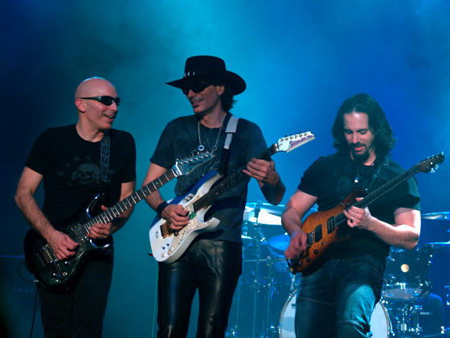

Joe Satriani
The man who are the best guitar hero on the world

Satriani with Steve Vai (center) and John Petrucci (right) as part of G3 in Melbourne, 2006.
Here's a time line of Joe Satriani's life:
- Joe Satriani was born in Westbury, New York of Italian descent.
- He was inspired to play guitar at age 14, after hearing of the death of Jimi Hendrix.
- In 1974, Satriani studied music with jazz guitarist Billy Bauer and with reclusive jazz pianist Lennie Tristano.
- In 1987, Satriani's second album Surfing with the Alien produced radio hits and was the first all-instrumental release to chart so highly in many years.
- In 1992, Satriani released The Extremist, his most commercially successful album to date. Radio stations across the US picked up "Summer Song", which got a major boost when Sony used it in a major commercial campaign for their Discman portable CD players.
- In 1996, Satriani founded the G3, a concert tour intended to feature a trio of guitarists. The original lineup featured Satriani, Steve Vai, and Eric Johnson. The G3 tour has continued periodically since its inaugural version, with Satriani the only permanent member.
- On August 7, 2007, Epic/Legacy Recordings re-released Surfing with the Alien to celebrate the 20th anniversary of its release.
- In August 2014, Satriani participated in the G4 Experience—a week-long guitar camp—with fellow guitarists Paul Gilbert and Andy Timmons, and keyboardist Mike Keneally.
- In February 2015, the first dates were announced for the Shockwave World Tour, in support of Satriani's 15th studio album, slated for release in July.
- On September 16, 2017, Satriani teased his upcoming 16th studio album, What Happens Next, through social media.
- Satriani is considered a highly technical guitarist,[48] and has been referred to as a top guitar virtuoso.[49][50] Satriani has mastered many performance techniques on electric guitar, including legato, two-handed tapping and arpeggio tapping, volume swells, harmonics and extreme whammy bar effects. During fast passages, Satriani favors a legato technique (achieved primarily through hammer-ons and pull-offs) that yields smooth and flowing runs. He is also adept at other speed-related techniques such as rapid alternate picking and sweep picking.
Satriani was influenced by Jimi Hendrix, and by English rock guitarists such as Brian May, Eric Clapton, Jimmy Page, Ritchie Blackmore, and Jeff Beck.[5][51] Satriani was also influenced by jazz fusion guitarist Allan Holdsworth.